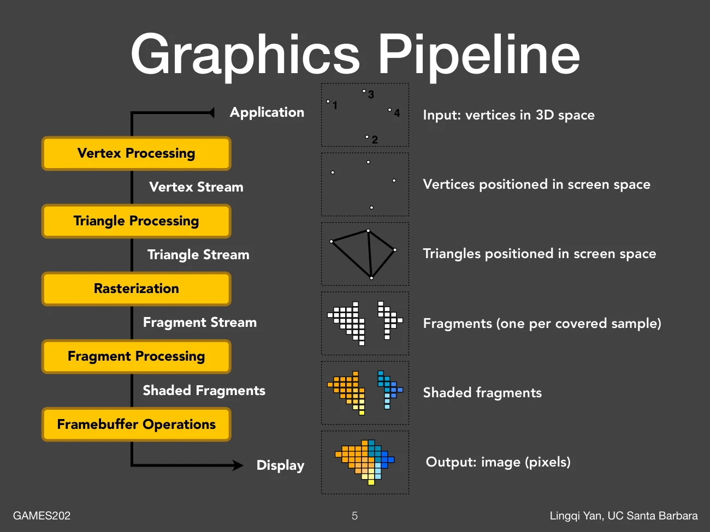
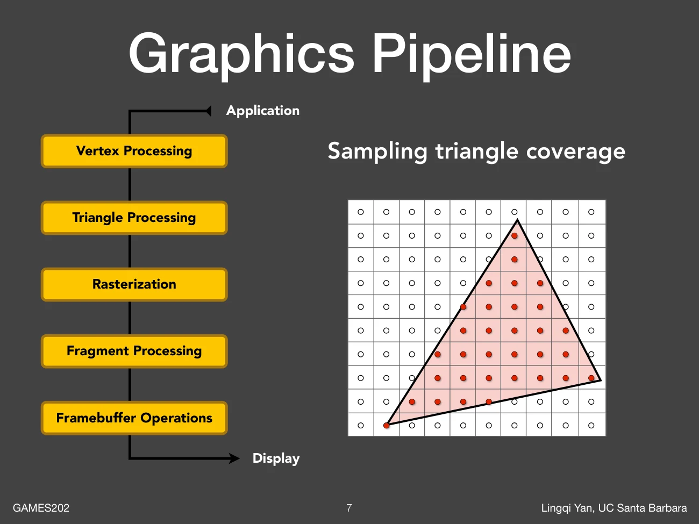
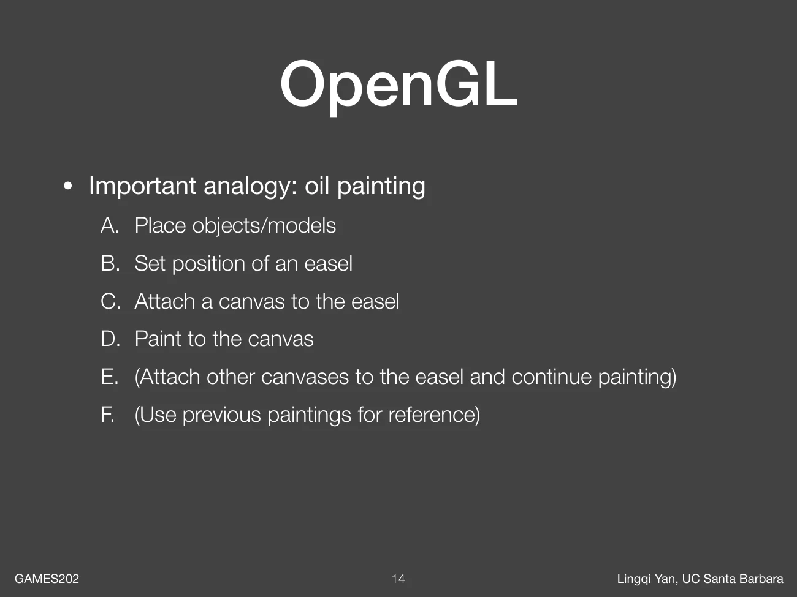
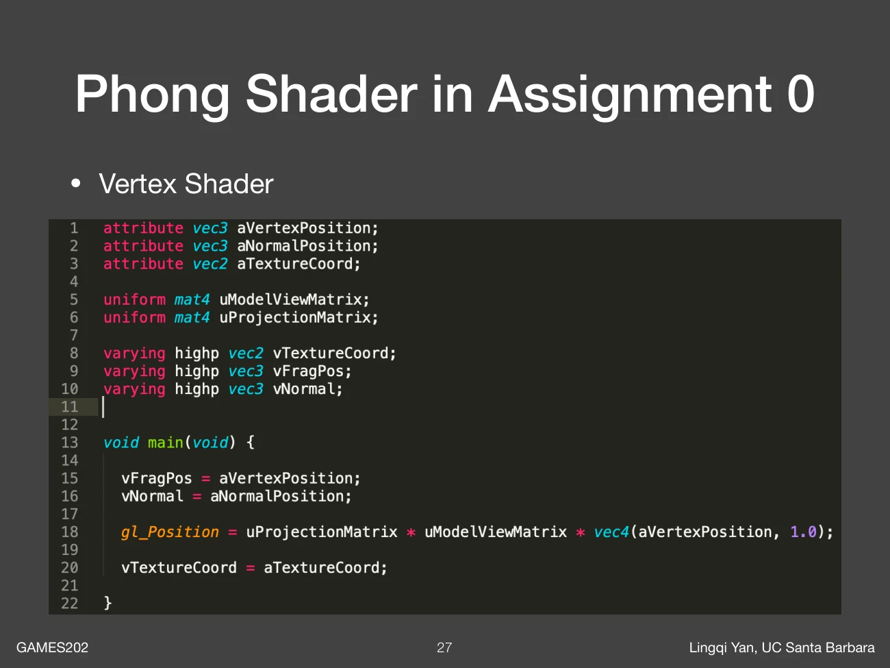
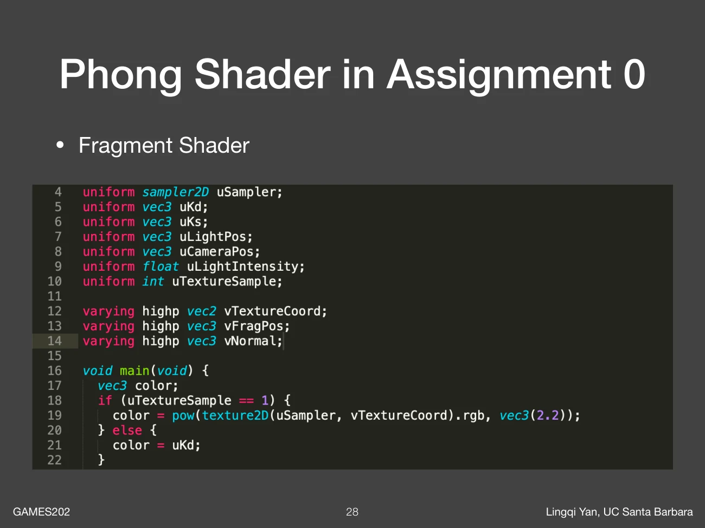
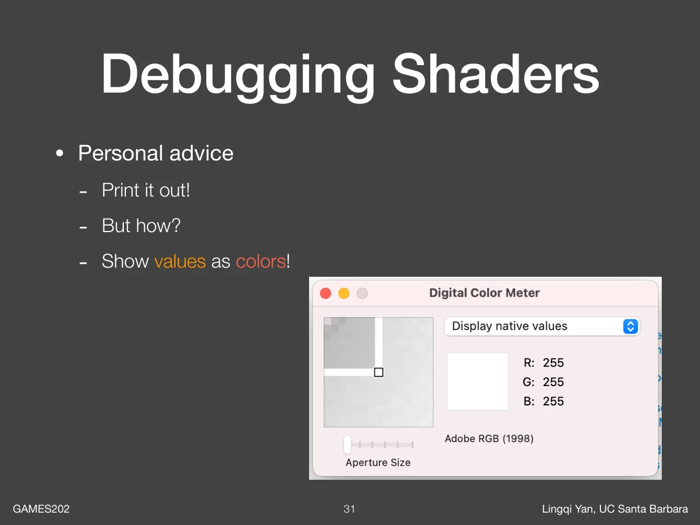
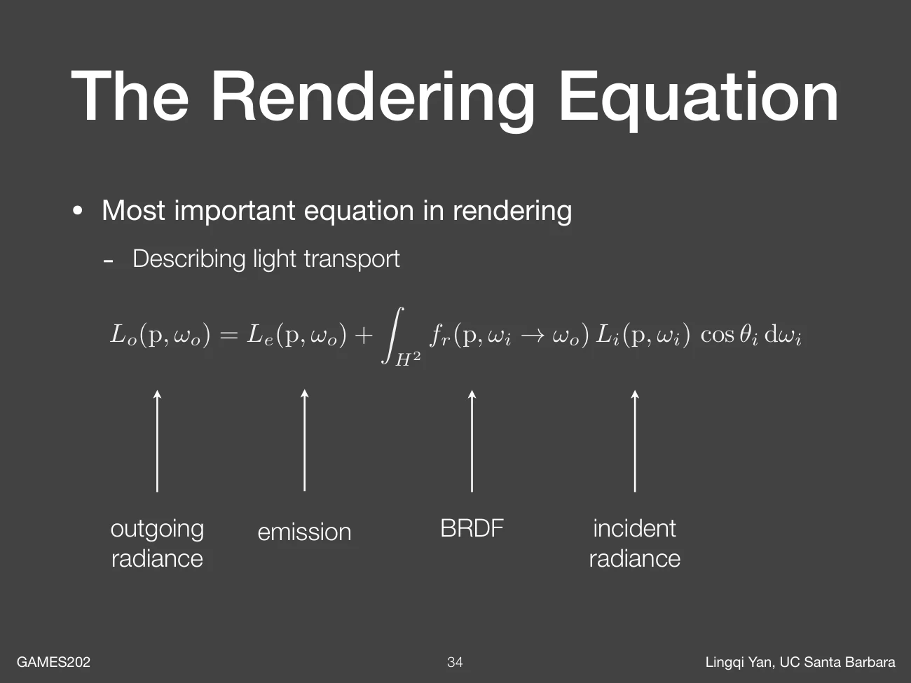
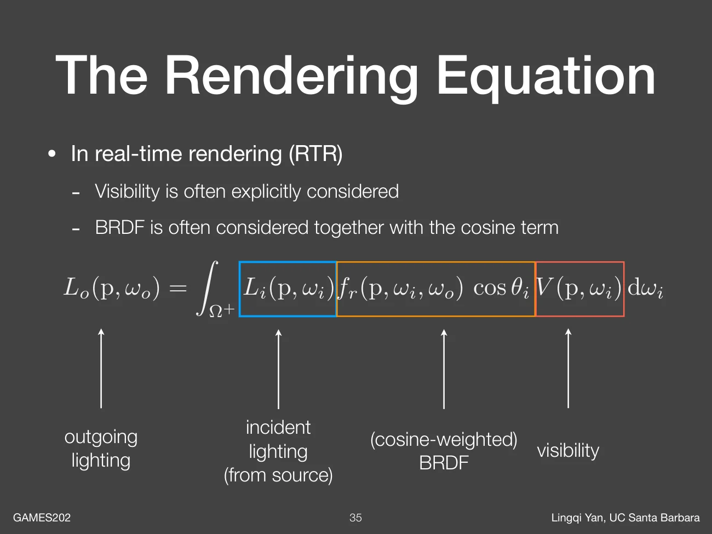
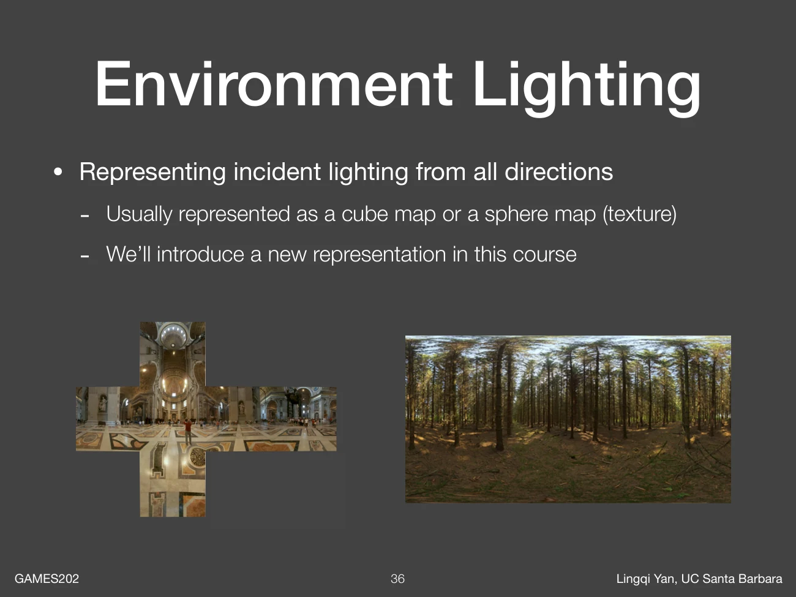
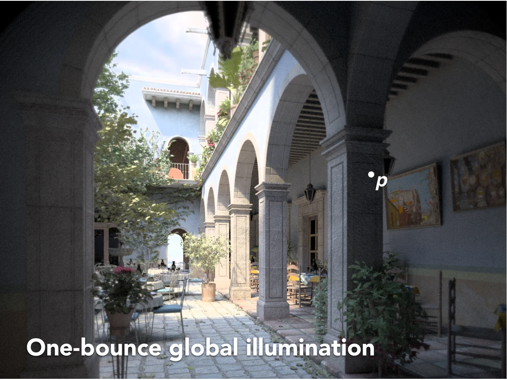

第 2 讲：CG 基础回顾——从 GPU 管线到渲染方程
用一讲把实时渲染的“地基”重新夯实：GPU 管线、OpenGL/GLSL、渲染方程与积分。
◆ 学完这一讲，你应该能
能按顺序复述 GPU 图形管线的六个阶段，并说明每个阶段输入输出是什么。
能用“画油画”的类比解释 OpenGL 的一次渲染 pass 在做什么。
能写出渲染方程的两种形式（含发射项与实时渲染中显式可见性项），并解释每一项的物理含义。
能说明环境光照（environment lighting）的常见表示方式，以及直接光照与多次弹射全局光照的区别。
能独立完成 GLSL shader 的创建、编译、链接、使用流程，并知道如何用“颜色可视化”调试 shader。
核心结论速记
GPU 图形管线固定顺序：Application → Vertex Processing → Triangle Processing → Rasterization → Fragment Processing → Framebuffer Operations → Display。
光栅化（rasterization）的本质是采样三角形覆盖，每个被覆盖的采样点生成一个 fragment。
OpenGL 只是 CPU 调用 GPU 管线的 API 集合，语言无关、跨平台；一次 pass 类似画一幅油画：摆模型、架画架、贴画布、作画。
真正由用户掌控的是 vertex shader 与 fragment shader，其余步骤大多被封装。
渲染方程是渲染领域最重要的方程，描述光能传输：出射辐射 = 发射 + 入射辐射在半球上的积分（BRDF × 余弦项）。
实时渲染中常把可见性 V(p,ωi) 显式写进积分，并把 BRDF 与余弦项合并理解。
环境光照通常用 cube map 或 sphere map 表示来自所有方向的入射光；直接光照与一次/两次弹射全局光照是理解 GI 的起点。
Shader 调试的土办法但极有效：把中间值当颜色输出，肉眼检查。
011. 图形管线：一条从顶点到像素的流水线
这一讲是复习课，但复习的正是后面所有高级技术的地基。先看硬件图形管线（graphics pipeline）。课件把它拆成六个阶段，每个阶段吃进一种“流”，吐出下一种“流”：
- Application（应用阶段）：CPU 端准备顶点数据（3D 空间中的顶点）、模型变换、相机参数等。
- Vertex Processing（顶点处理）：对每个顶点做模型（Model）、视图（View）、投影（Projection）变换，输出屏幕空间中的顶点。
- Triangle Processing（三角形处理）：把顶点组装成三角形，输出屏幕空间中的三角形流。
- Rasterization（光栅化）：对每个三角形做覆盖采样，每个被覆盖的采样点生成一个 fragment（片元）。
- Fragment Processing（片元处理）：对每个 fragment 做着色、光照计算，输出带颜色的 fragment。
- Framebuffer Operations（帧缓冲操作）：深度测试、混合等，最终写入帧缓冲，显示为图像。
这里有两个关键词要咬住：流（stream） 和 并行（parallel）。顶点处理是“每个顶点并行”，片元处理是“每个片元并行”，这正是 GPU 的设计哲学——用海量简单核心同时处理大量独立数据。
光栅化那一步，课件特意画了“Sampling triangle coverage”的图：三角形是连续的几何，屏幕是离散的像素网格，光栅化就是判断“这个采样点是否被三角形覆盖”。覆盖了就生成 fragment，没覆盖就不生成。所以 fragment 不是像素，它是“候选像素”，后面还要经过深度测试、混合才可能真正变成像素。
深度测试（Z-Buffer / visibility tests）通常发生在片元处理之后、帧缓冲操作之中，由 OpenGL 自动处理，除非你主动覆盖。理解这条流水线的顺序，后面讲阴影贴图、延迟渲染、Early-Z 优化时你才知道“优化发生在哪一级”。


常见坑
把 fragment 当成像素 → 一个像素可能对应多个 fragment（多重采样时），且 fragment 可能被深度测试丢弃 → 记住 fragment 是“候选像素”。
以为深度测试一定在片元着色之后 → 实际有 Early-Z 优化，但 shader 里写 discard 或修改深度会禁用 Early-Z → 排查性能问题时先检查 shader 是否用了 discard。
UE / Unity 落地
UE：这条管线对应 RHI 层的 Draw Call 流程；Vertex Processing 对应顶点工厂（Vertex Factory），Fragment Processing 对应像素着色器（Pixel Shader）。
Unity：对应 Scriptable Render Pipeline 中的 DrawRenderers 流程；光栅化与深度测试由底层图形 API 自动完成。
022. OpenGL：用“画油画”理解一次渲染 pass
OpenGL 是什么？课件给的定义很朴素：一组从 CPU 调用 GPU 管线的 API。所以它和语言无关（C/C++/Python 都能调），跨平台，替代品有 DirectX、Vulkan、Metal 等。缺点也直白：版本碎片化、C 风格不好用、过去很难调试。
课件用“画油画”做类比，这个类比值得完整记下来，因为它把一次渲染 pass 的步骤串成了故事：
- A. 摆放物体/模型：用户指定物体的顶点、法线、纹理坐标，打包成顶点缓冲对象（VBO）传给 GPU；模型变换矩阵可以用
glTranslate、glMultMatrix等函数获得，不需要自己推导。 - B. 架好画架：设置视图变换（相机），例如调用
gluPerspective设置投影矩阵；创建/使用帧缓冲。 - C. 把画布贴到画架上：指定帧缓冲，指定一张或多张纹理作为输出（颜色、深度等）。这就是一次渲染 pass。
- D. 在画布上作画：即执行着色。对每个顶点并行调用 vertex shader（做 ModelView、Projection 变换等）；对每个图元光栅化生成 fragment；对每个 fragment 并行调用 fragment shader（着色与光照计算）。
- E. 同一画架画多幅画：多个 pass，复用同一个画架（帧缓冲/相机），换画布（输出纹理）。
- F. 用之前的画作参考：把上一 pass 的输出纹理作为下一 pass 的输入，这就是多 pass 渲染。
课件强调：真正由用户掌控、也是我们最关心的是 vertex shader 和 fragment shader，其他操作大多被封装，甚至以 GUI 形式提供。一次 pass 的清单可以总结为：指定物体、相机、MVP；指定帧缓冲与输入/输出纹理；指定 vertex/fragment shader；然后 Render！剩下的就是多 pass 组合。
这个“多 pass + 纹理作为输入输出”的思维，是后面所有实时渲染技术（阴影贴图、SSAO、后处理、Lumen 的多级追踪）的通用骨架。

补充说明
课件提到 OpenGL 与 GAMES202 软件光栅器的 1:1 映射，说明课程作业里你会亲手实现这条管线的一部分。
常见坑
把“一次 pass”理解成“画一个物体” → 一次 pass 可以画很多物体，关键是“同一组帧缓冲 + 同一组 shader 状态” → 排查渲染顺序时按 pass 而不是按物体分组。
忘记绑定帧缓冲就直接渲染 → 结果画到了默认帧缓冲（屏幕）而不是目标纹理 → 检查
glBindFramebuffer是否在绘制前调用。
UE / Unity 落地
UE：一个 pass 对应一个 Render Pass（如 BasePass、LightingPass、PostProcessPass），输出到不同的 Render Target，与课件“画布”概念一一对应。
Unity：对应 Scriptable Render Pass，通过
CommandBuffer.SetRenderTarget指定输出纹理，通过CommandBuffer.DrawRenderer提交绘制。
033. GLSL 与 Shader 的创建流程
顶点/片元着色器是用一种“像 C 但有诸多限制”的小程序描述的。课件简单回顾了着色语言的历史：从 Cook 的 Shade Trees、RenderMan 离线渲染，到早期 GPU 上的汇编，再到 Stanford 实时着色语言、NVIDIA 的 Cg、DirectX 的 HLSL、OpenGL 的 GLSL。今天实时渲染里最常见的就是 HLSL 和 GLSL。
Shader 的初始化流程和编译一个普通程序非常像，课件列了六步：
- 创建 shader（vertex 和 fragment 各一个）：
glCreateShader(type)； - 编译 shader：
glCompileShader(shader)； - 把 shader 附加到 program：
glAttachShader(program, shader)； - 链接 program：
glLinkProgram(program)； - 检查链接状态：
glGetProgramiv(program, GL_LINK_STATUS, &linked)； - 使用 program：
glUseProgram(program)。
Shader 源码本质上就是一串字符串，所以读文件、拼字符串、传指针这些“杂活”和普通程序一样。课件给了两段 FYI 代码：initshaders 负责创建+编译，initprogram 负责附加+链接+使用。注意里面有个小坑：glShaderSource 需要 const GLchar**，所以代码里做了 const GLchar * cstr2 = cstr; 再取地址这种“别扭”的转换。
课件还展示了作业里 Phong Shader 的 vertex shader 和 fragment shader 截图（P26–P28），说明这一讲之后你就要动手写着色器了。对自学者来说，关键不是背 API，而是理解“shader 是 GPU 上并行执行的小程序，输入输出由管线阶段决定”。


常见坑
编译失败但只看到“链接失败” → 实际是某个 shader 编译错误没检查 → 每次
glCompileShader后都要查GL_COMPILE_STATUS并打印日志。vertex shader 输出变量名与 fragment shader 输入变量名不一致 → 链接报错或插值数据为 0 → 保证 varying（GLSL 1.x）或 out/in 变量名与类型完全一致。
UE / Unity 落地
UE：材质编辑器底层会把节点图编译成 HLSL，最终走类似“编译→链接→使用”的流程；自定义节点（Custom Node）可以直接写 HLSL。
Unity：ShaderLab 包裹 HLSL/CG 代码，
#pragma vertex/fragment指定入口函数，编译流程由引擎管理。
Shader 创建与链接的最小流程（对应课件 P24–P25）（cpp）
GLuint shader = glCreateShader(type);
glShaderSource(shader, 1, &src, NULL);
glCompileShader(shader);
// 检查 GL_COMPILE_STATUS ...
GLuint program = glCreateProgram();
glAttachShader(program, vertexShader);
glAttachShader(program, fragmentShader);
glLinkProgram(program);
// 检查 GL_LINK_STATUS ...
glUseProgram(program);044. 调试 Shader：把中间值画成颜色
Shader 调试是实时渲染里最让人头疼的环节之一，课件专门用两页讲。历史方案：早年用 NVIDIA Nsight 配合 Visual Studio，调试 GLSL 需要多块 GPU，调试 HLSL 还得跑软件模拟模式，非常痛苦。现在好多了：Nsight Graphics（跨平台，但仅限 NVIDIA GPU）和 RenderDoc（跨平台，对 GPU 无限制）是主流工具。课件作者也坦诚：不确定它们能不能用于 WebGL。
但课件给了一条“个人建议”，非常朴素也非常有效：把它打印出来！ 问题是 shader 里没有 printf，怎么办？答案是 把数值当颜色显示（Show values as colors）。
具体做法：把你想检查的中间量（法线、世界坐标、UV、某个点积结果）直接作为 fragment shader 的输出颜色。比如 gl_FragColor = vec4(normal * 0.5 + 0.5, 1.0); 把法线从 [-1,1] 映射到 [0,1] 显示出来。正常法线应该呈现平滑的彩色渐变；如果出现大片纯色、突变或黑色，说明法线没归一化、插值出错或坐标系不一致。
这个技巧之所以重要，是因为它把“不可见的 GPU 内部状态”变成了“可见的图像”，你不需要断点，只需要看图。后面做阴影、SSAO、PBR 时，把深度、法线、粗糙度、可见性逐项可视化，是定位问题的第一手段。

常见坑
直接输出法线原值导致颜色被截断 → 法线分量在 [-1,1]，负值被 clamp 成 0 → 先做
*0.5+0.5映射到 [0,1]。可视化深度时全白或全黑 → 深度值范围可能远超 [0,1] 或精度分布不均 → 先做线性化或除以远平面再显示。
UE / Unity 落地
UE：可以用 Debug View / Buffer Visualization 查看法线、深度、粗糙度等，本质就是课件说的“把值当颜色显示”。
Unity：Frame Debugger 可以逐 draw call 查看渲染目标；自定义 Debug Shader 输出中间量同样有效。
把法线可视化为颜色（fragment shader 片段）（glsl）
// normal 为归一化后的世界空间法线
vec3 color = normal * 0.5 + 0.5;
gl_FragColor = vec4(color, 1.0);055. 渲染方程：实时渲染的总纲
课件称渲染方程（the rendering equation）为“渲染中最重要的方程”，它描述光能传输。标准形式是：
\[ L_o(p, \omega_o) = L_e(p, \omega_o) + \int_{\Omega^+} f_r(p, \omega_i, \omega_o)\, L_i(p, \omega_i)\, \cos\theta_i \, d\omega_i \]
逐项解释：
- \(L_o(p, \omega_o)\)：从点 \(p\) 沿方向 \(\omega_o\) 的出射辐射亮度（outgoing radiance）；
- \(L_e(p, \omega_o)\)：该点自身发射的辐射亮度（emission）；
- \(\int_{\Omega^+} \cdots d\omega_i\)：对上半球所有入射方向积分；
- \(L_i(p, \omega_i)\)：从方向 \(\omega_i\) 来的入射辐射亮度（incident radiance）；
- \(f_r(p, \omega_i, \omega_o)\)：BRDF（双向反射分布函数），描述材质如何把入射光反射到出射方向；
- \(\cos\theta_i\)：入射方向与表面法线的夹角余弦，来自辐照度的投影因子。
直觉上：一个点朝你眼睛发出的光 = 它自己发的光 + 它接收到的所有方向的光，按材质反射特性加权后求和。积分就是“把所有方向加起来”。
实时渲染里，课件给出了一个更实用的变体：把可见性 \(V(p, \omega_i)\) 显式写进积分，并把 BRDF 与余弦项放在一起理解：
\[ L_o(p, \omega_o) = \int_{\Omega^+} L_i(p, \omega_i)\, f_r(p, \omega_i, \omega_o)\, \cos\theta_i\, V(p, \omega_i)\, d\omega_i \]
为什么实时渲染要显式写可见性？因为实时渲染大量技术（阴影贴图、SSAO、屏幕空间反射）本质上都在近似这个 \(V\) 项或环境入射光。课件把积分里的项标注为：入射光照（来自光源）、BRDF、余弦加权、可见性、出射光照。
理解这个方程，你就理解了后面所有“高质量实时渲染”技术到底在近似哪一项：阴影近似 V，环境光照近似 \(L_i\)，PBR 近似 \(f_r\)，全局光照近似整个积分。


补充说明
课件中公式为图片，这里按标准渲染方程写出；实时变体中的 V 项位置以课件 P34 标注为准。
常见坑
把 \(L_i\) 和 \(L_o\) 搞混 → 前者是“来的光”，后者是“走的光” → 记法：i = incident（入射），o = outgoing（出射）。
忘记余弦项导致能量不守恒、边缘过亮 → \(\cos\theta_i\) 是投影因子，不能省 → 写 shader 时检查
dot(N, L)是否参与。把 BRDF 当成“颜色” → BRDF 量纲是 1/球面度，不是颜色 → 颜色通常来自 albedo 与 BRDF 的乘积，不要混为一谈。
UE / Unity 落地
UE：Lumen 的全局光照与反射本质上就是在实时近似这个积分；阴影（Shadow Map / VSM）近似 V 项。
Unity：URP/HDRP 的 PBR 光照模型对应 BRDF 项；Lightmap 与 Light Probe 对应预计算的入射光照 \(L_i\)。
066. 环境光照与全局光照的弹射直觉
渲染方程里的 \(L_i\) 是“从所有方向来的入射光”。如果光源是点光/方向光，\(L_i\) 只在少数方向非零，积分退化成求和，这就是直接光照。但真实世界的光来自四面八方，课件把这种“来自所有方向的入射光照”称为 环境光照（environment lighting），通常用 cube map 或 sphere map（一种纹理）来表示。课件还预告：本课程会介绍一种新的表示方式（后续讲球谐函数时会展开）。
接下来课件用三张图建立了全局光照的直觉（P36–P38）：
- 直接光照（direct illumination）：点 \(p\) 只接收光源直接照射的光，没有其他物体反射的光。画面硬、暗部死黑。
- 一次弹射全局光照（one-bounce global illumination）：光打到其他表面后反射一次再到 \(p\)，例如墙面的颜色会“染”到附近物体上（color bleeding）。
- 两次弹射全局光照（two-bounce global illumination）：光经过两次反射再到 \(p\)，间接光更柔和、更充分。
这三张图是理解 GI 的阶梯：直接光照只算 \(L_e\) 直接到达的部分；一次弹射把其他表面的出射光当作 \(p\) 的入射光；两次弹射继续递归。渲染方程本身是递归的——\(L_o\) 会变成别处的 \(L_i\)，所以完整求解需要递归或迭代。实时渲染无法无限递归，所以用各种近似：预计算光照贴图、光照探针、屏幕空间 GI、Lumen 的辐射度缓存等。
课件最后预告下一讲：阴影贴图（shadow mapping），包括基础阴影贴图、软阴影技术、方差阴影贴图（VSM）和矩阴影贴图（MSM）。阴影正是对渲染方程中 V 项的系统性近似，所以这一讲把方程讲透，下一讲才能顺利展开。


常见坑
把环境光照当成“一个恒定的环境光颜色” → 真实环境光照是方向相关的 \(L_i(\omega_i)\) → 用 cube map 采样而不是加一个常数。
以为弹射次数越多一定越好 → 能量会收敛，但计算量指数增长 → 实时里通常 1~2 次弹射 + 近似即可。
UE / Unity 落地
UE：Sky Light 使用 cube map 作为环境光照；Lumen 提供实时多次弹射 GI。
Unity：Skybox 与 Reflection Probe 提供环境光照；Lightmap 烘焙间接光，Enlighten 支持实时 GI。
引擎对照表
| 概念 / 效果 | Unreal Engine | Unity |
|---|---|---|
图形管线阶段 | RHI Draw Call → 顶点工厂 → 像素着色器 | SRP DrawRenderers → Vertex/Fragment Shader |
一次渲染 pass 与输出纹理 | Render Pass + Render Target | Scriptable Render Pass + RenderTexture |
Shader 编译链接 | 材质节点图编译为 HLSL | ShaderLab 包裹 HLSL，引擎管理编译 |
Shader 调试 | Buffer Visualization / Debug View | Frame Debugger + 自定义 Debug Shader |
环境光照 | Sky Light（cube map） | Skybox / Reflection Probe |
全局光照 | Lumen（实时多次弹射） | Lightmap 烘焙 / Enlighten 实时 GI |
术语双语表
| English | 中文 | 说明 |
|---|---|---|
| Graphics Pipeline | 图形管线 | 从顶点到像素的固定阶段流水线，GPU 并行执行。 |
| Rasterization | 光栅化 | 判断三角形覆盖哪些采样点，被覆盖则生成 fragment。 |
| Fragment | 片元 | 光栅化产生的“候选像素”，经深度测试与混合后才可能成为像素。 |
| VBO | 顶点缓冲对象 | 把顶点、法线、纹理坐标打包传给 GPU 的缓冲。 |
| GLSL | OpenGL 着色语言 | 类 C 的着色器语言，用于编写 vertex/fragment shader。 |
| Rendering Equation | 渲染方程 | 描述光能传输的积分方程，实时渲染技术的总纲。 |
| BRDF | 双向反射分布函数 | 描述材质如何把入射光反射到出射方向的函数。 |
| Environment Lighting | 环境光照 | 来自所有方向的入射光照，常用 cube map / sphere map 表示。 |
| Global Illumination | 全局光照 | 考虑物体间多次光反射的照明，分一次弹射、两次弹射等。 |
课后练习
01 按顺序写出 GPU 图形管线的六个阶段，并说明光栅化阶段的输入和输出分别是什么。
查看答案
提示：
回忆课件 P4 的流程图，注意每个阶段右侧的“流”类型。
六阶段：Application → Vertex Processing → Triangle Processing → Rasterization → Fragment Processing → Framebuffer Operations → Display。光栅化输入是屏幕空间中的三角形流，输出是 fragment 流（每个被覆盖的采样点一个 fragment）。
02 用“画油画”的类比解释 OpenGL 一次渲染 pass 的步骤，并指出哪些步骤由用户 shader 控制。
查看答案
提示：
对应课件 P13–P18 的 A~F 六步。
A 摆放模型（指定顶点/法线/纹理坐标，传 VBO，设模型变换）；B 架画架（设视图/投影矩阵，创建帧缓冲）；C 贴画布（指定帧缓冲与输出纹理）；D 作画（调用 vertex shader 做变换，光栅化生成 fragment，调用 fragment shader 做着色与光照）；E 同一画架画多幅（多 pass 复用相机/帧缓冲）；F 用之前的画作参考（上一 pass 输出作为下一 pass 输入）。其中 D 的 vertex shader 与 fragment shader 由用户编写并控制，其余大多被 OpenGL 封装。
03 写出渲染方程的标准形式，并解释每一项的物理含义；再写出实时渲染中显式包含可见性 V 的变体。
查看答案
提示：
注意积分域是上半球，余弦项来自投影因子。
标准形式：\(L_o(p,\omega_o)=L_e(p,\omega_o)+\int_{\Omega^+} f_r(p,\omega_i,\omega_o)L_i(p,\omega_i)\cos\theta_i\,d\omega_i\)。其中 \(L_o\) 是出射辐射亮度，\(L_e\) 是自发光，\(f_r\) 是 BRDF，\(L_i\) 是入射辐射亮度，\(\cos\theta_i\) 是入射方向与法线夹角的余弦，积分域是上半球。实时变体：\(L_o(p,\omega_o)=\int_{\Omega^+} L_i(p,\omega_i)f_r(p,\omega_i,\omega_o)\cos\theta_i V(p,\omega_i)\,d\omega_i\)，其中 \(V\) 是可见性（0 或 1，或被软阴影推广为连续值）。
04 在 fragment shader 中如何调试一个可疑的法线？写出关键代码，并说明正常与异常时分别看到什么。
查看答案
提示：
法线分量范围是 [-1,1]，颜色范围是 [0,1]。
代码：vec3 color = normal * 0.5 + 0.5; gl_FragColor = vec4(color, 1.0);。正常归一化法线应呈现平滑的彩色渐变；若出现大片纯色、突变或黑色，说明法线未归一化、插值错误或坐标系不一致。
05 解释直接光照、一次弹射全局光照、两次弹射全局光照的区别，并各举一个画面上的直观现象。
查看答案
提示：
联系课件 P36–P38 的三张图。
直接光照只计算光源直接到达表面的光，画面硬、暗部死黑；一次弹射 GI 额外计算光经其他表面反射一次后的照明，能看到颜色渗透（color bleeding），例如红墙旁的物体带红；两次弹射 GI 再增加一次反射，间接光更柔和充分，暗部细节更多。